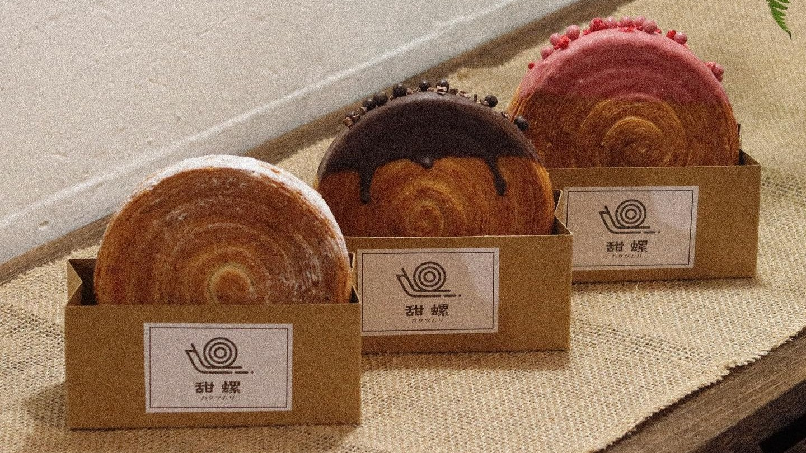
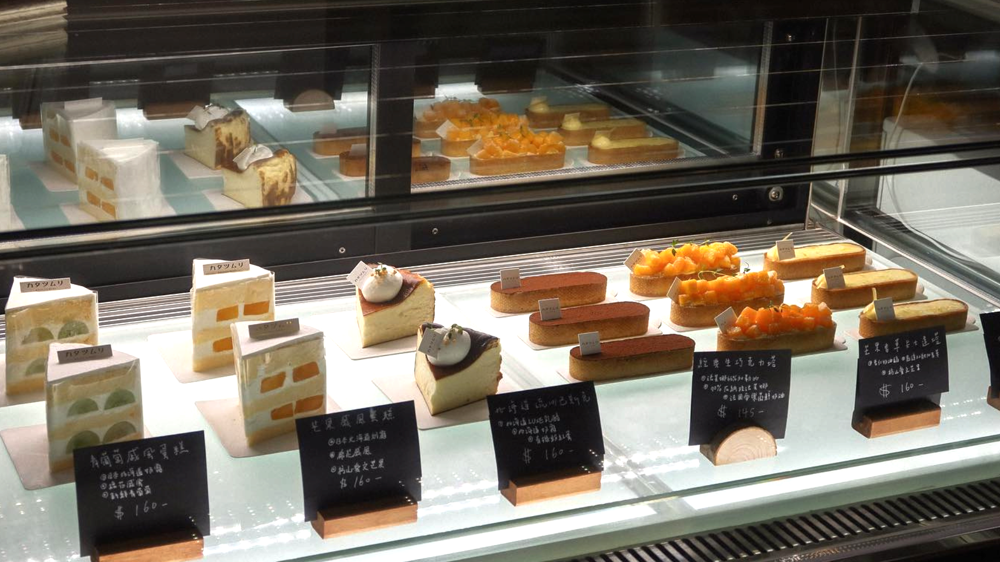

❮
❯
位於雲林的西螺在三百多年前，因為地形與田螺相似，而湊巧濁水溪對岸的彰化北斗地區也很像田螺，經過協議後將北斗稱為東螺，而位於對面的我們稱為西螺。
基於田螺一詞，將甜點的甜字結合，因此取名為「甜螺」，而後面加上日文「カタツムリ」則是蝸牛的意思，除了本身偏愛日本文化外，也預計將店面打造成昭和懷舊風。
期許自己能夠貫徹日本職人的精神，注重每個細節並要求自己，希望像隻蝸牛一樣，步伐雖然緩慢但從不中途折返。
Logo改以樸實的線條勾勒出簡約的田螺、蝸牛樣貌，身上的殼刻意以同心圓去構成，就像棒棒糖一樣結合了「甜」的意念，將品牌概念完整呈現。